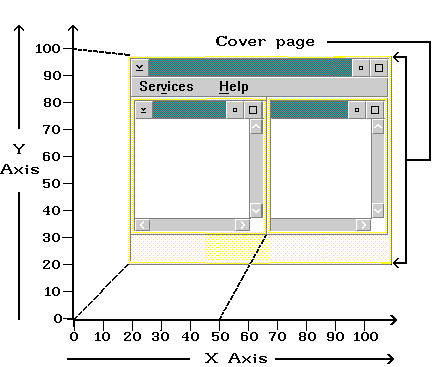

Each window represents a rectangle with x and y coordinates. The x-axis is always horizontal; the y-axis is always vertical. The position where the values specified for x and y intersect is the window's origin. From this position, width and height are measured. The following figure shows the window coordinates of a primary and secondary window.

A Window in Relationship to Its Coordinates